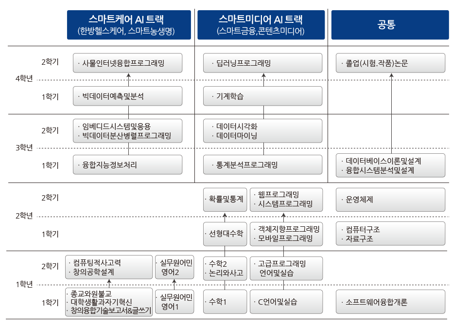
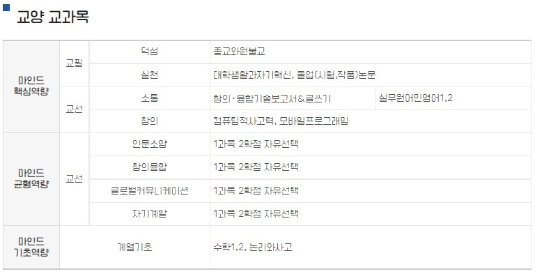
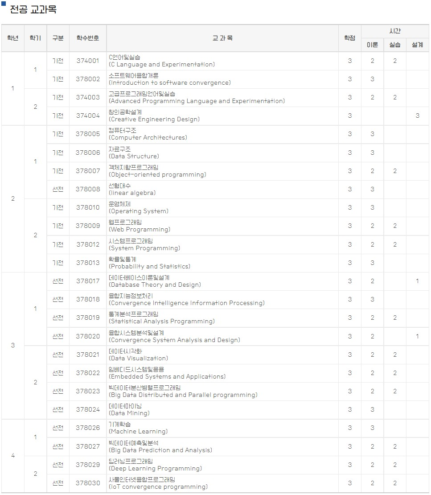

학과 교과과정
4/21 2022
카테고리：학과 교과과정
인공지능융합학과는 IT 기반 이론 및 지능정보처리(빅데이터, 인공지능) 기술에 대한 교육을 수행한다. 소프트웨어 융합인재를 양성하기 위해 SW 전문 기술 및 기술간 융합을 위한 연계 기술을 교육한다. 스스로 문제를 인식하고 해결하기 위한 방안을 도출할 수 있도록 창의적이고 논리적 사고를 배양하기 위한 교과과정을 추가적으로 운영한다. 소프트웨어 기술을 기반으로 기술 융합 및 타 학문과의 연계를 위해 4차산업혁명을 주도하는 지능정보처리 이론 뿐만 아니라 이를 실제 활용하기 위한 실무 개발 능력을 향상시키기 우한 교과과정을 중점적으로 운영한다.
  